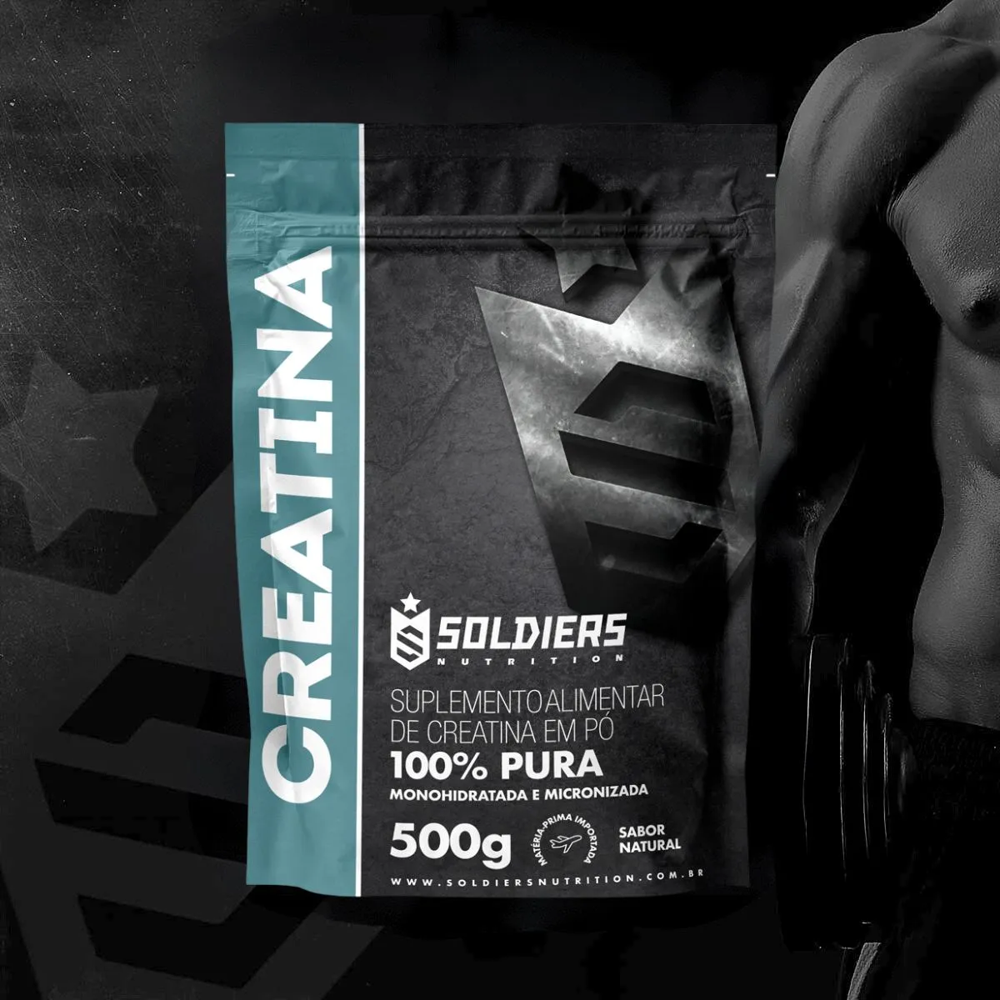

💪 Creatina Monohidratada 500g Pura: Potencialize seu Desempenho
Por Equipe AchadoCerto.VIP | Saúde & Performance

Se você treina com seriedade, sabe que cada detalhe faz diferença. A Creatina Monohidratada é o suplemento mais estudado e comprovado da história do esporte. Descubra por que atletas profissionais e amadores confiam nela para ganho de massa muscular, força e performance máxima.
🔬 O que é Creatina Monohidratada?
A creatina monohidratada é um composto natural formado por três aminoácidos: arginina, glicina e metionina. Seu corpo já produz creatina naturalmente no fígado e rins, porém em quantidades insuficientes para otimizar desempenho atlético. A suplementação aumenta a concentração de creatina no músculo em até 40%, melhorando drasticamente a capacidade de produção de energia durante exercícios intensos.
Estrutura Molecular: A creatina monohidratada é composta por uma molécula de creatina ligada a uma molécula de água. Esta é a forma mais pura e eficiente disponível, com mais de 20 anos de pesquisa científica comprovando sua segurança absoluta e eficácia incomparável.
💪 Principais Benefícios Comprovados
✓ Aumento de 20% em Força Máxima
A creatina funciona aumentando ATP (energia celular) disponível para músculos. Resultado: mais repetições, mais peso levantado, recuperação superior entre séries. Estudos mostram que usuários de creatina conseguem adicionar 2-3 repetições extras em cada série de treino.
✓ Ganho Acelerado de Massa Muscular
Com mais energia, seus treinos ficam 40% mais intensos. A creatina hidrata células musculares, promovendo síntese proteica e retenção de nitrogênio. Ganhos de 1-2kg em apenas 4-8 semanas são comuns entre iniciantes.
✓ Recuperação Muscular Otimizada
Reduz dano muscular em até 30%, acelera síntese proteica e diminui soreness. Você se recupera mais rápido e pode treinar com frequência maior sem supertreinamento, permitindo progressão mais rápida.
✓ Performance em Alta Intensidade
Perfeita para musculação, crossfit, sprints e esportos explosivos. Eficiente em atividades anaeróbicas com picos de potência curtos e repetidos. Atletas de alta performance veem melhora significativa em tempo de recuperação entre séries.
✓ Benefícios Cognitivos Comprovados
Pesquisas recentes mostram melhoria de 10-15% em função cerebral, memória episódica e redução de fadiga mental. Um bônus surpreendente para o seu cérebro que vai além do desempenho físico!
🏆 Qualidade Premium - Soldiers Nutrition
🔹 Pureza Garantida: 99.8% de concentração monohidratada. Cada colher contém praticamente creatina pura, SEM enchimentos ou aditivos desnecessários. Laboratórios certificados comprovam essa pureza.
🔹 Origem Importada Farmacêutica: Matéria-prima de procedência internacional, garantindo qualidade superior e consistência em cada dose. Atende aos padrões internacionais de produção.
🔹 Laudo de Pureza Comprovado: Testado em laboratório independente, confirmando ausência de contaminantes, metais pesados e substâncias proibidas. 100% seguro e legal para competições.
🔹 Solubilidade Excelente: Dissolve completamente em água ou suco, sem resíduos. Sem sabor - combina com qualquer bebida do seu gosto.
📋 Especificações Técnicas Completas
- Quantidade: 500g (aproximadamente 100 doses de manutenção)
- Forma: Pó fino e branco cristalino
- Pureza: 99.8% Monohidratada
- Solubilidade: Excelente em água morna
- pH: Neutro - não afeta estômago
- Armazenamento: Local fresco e seco
- Validade: Mínimo 24 meses
- Certificações: Livre de substâncias proibidas (WADA)
💡 Como Usar Corretamente
Opção 1 - Fase de Carga (Mais Rápido)
- Dias 1-7: 20g diários (4 doses de 5g em água)
- A partir do dia 8: 3-5g diários para manutenção
- ⚠️ Importante: Beba bastante água durante esse período
- Resultado: Efeitos visíveis em 1-2 semanas
Opção 2 - Sem Carga (Mais Gradual)
- Dose diária: 3-5g em água ou suco
- Efeitos começam: 4-8 semanas
- Vantagem: Mais suave com o organismo
- Consistência: Sem variações drásticas de peso/energia
🎯 Dica Pro: Consuma com carboidrato e proteína (banana com shake) para melhorar absorção. O pico de insulina acelera a entrada da creatina nas células musculares em até 60%!
🎯 Nosso Achado Certo de Hoje
Selecionamos a Creatina Monohidratada 500g Pura da Soldiers Nutrition pelo seu excelente custo-benefício, pureza importada e qualidade comprovada em laboratório independente.

✓ 99.8% Pura | ✓ Importada | ✓ Laudo Garantido | ✓ Melhor Preço
VER OFERTA NO MERCADO LIVREProduto verificado e com entrega rápida. Aproveite agora!
✅ Por Que Escolher Este Produto?
🎁 Vantagens Exclusivas
- ✓ Pureza 99.8% comprovada em laudo
- ✓ Importada de origem farmacêutica
- ✓ Produto testado em laboratório independente
- ✓ Melhor relação custo-benefício do mercado
- ✓ 100% SEM aditivos ou enchimentos
- ✓ Aprovada por atletas profissionais
- ✓ Resultados visíveis em 4-8 semanas
- ✓ 100+ doses em um único pote
❓ Perguntas Frequentes
A creatina é segura?
Sim! Com mais de 20 anos de pesquisa científica e milhões de usuários no mundo, a creatina monohidratada é um dos suplementos mais seguros e eficazes disponíveis. Não causa danos renais ou hepáticos em pessoas saudáveis.
Quanto tempo leva para funcionar?
Com a fase de carga: 1-2 semanas. Sem carga: 4-8 semanas. Consistência é fundamental - tome todos os dias para melhores resultados.
Funciona para mulheres?
Absolutamente! Creatina não é hormonal e funciona igualmente bem para homens e mulheres. Ótima para prevenir perda de massa muscular, especialmente em idosas.
Preciso de ciclos ou pausas?
Não! Creatina pode ser usada continuamente sem perda de eficácia. Seu corpo não cria tolerância. Muitos atletas profissionais tomam durante anos sem problemas.
Vale a pena pelo preço?
Excelente custo-benefício! Um pote de 500g dura aproximadamente 3-4 meses em uso contínuo. Custa apenas alguns reais por mês para um dos suplementos mais eficazes que existe.